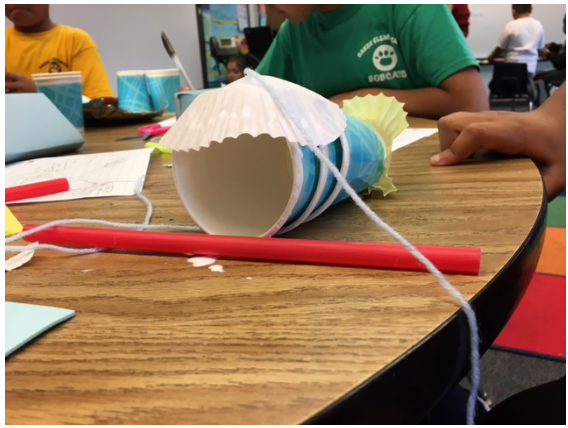
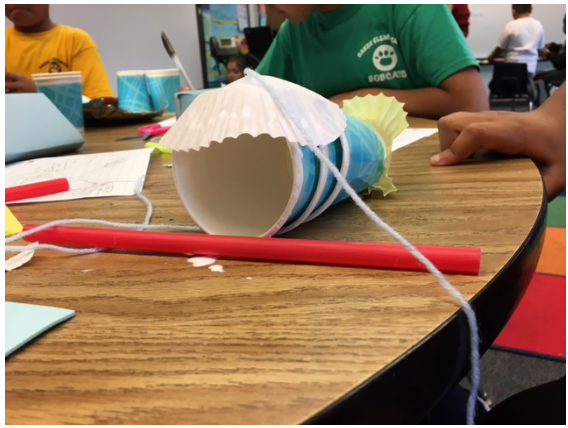

Elementary School Curriculum
Quick overview: I led multi-disciplinary team of 8 students to create a STEM-based curriculum for fifth grade students at an elementary school. This was important to my team because the school was made up of 95% minorities, mostly African American and Latino. Due to this, my team wanted to use this project as a way to show these students that careers is STEM are fun, and to try to promote more minority representation in the STEM Field.
Problems faced: There were issues with client communication, and visitation. Because our client was a specialized teacher who only taught at the school a couple times a month, it was difficult for our team liaison to communicate with her. Furthermore, she had other priorities such as working a full-time job and being a mother to a toddler. She didn’t seem to respond to emails very frequently, but calling always seemed to be at an inconvenient time. After trial and error, we learned that sending a text to let her know we emailed her was the quickest way to communicate with her. However, because of these issues, we weren’t able to communicate with her until a week into the project.
The second issue was visitation. The days our client worked at the school seemed to fluctuate quite frequently. Furthermore, sometimes she would not know the grades she was teaching until a couple days ahead of time. This was an issue simply because we would get late notice that she would be teaching. On one occasion, we even got notice the morning of that she would be teaching. We resolved this issue by rapidly communicating within the group, and see if someone could go to visit the school a day or two beforehand.
Process: The first step in this project was to define the problem. In order to do this, everyone on my team conducted 2 interviews with young students, our stakeholders, or educational professionals. Our team liaison also contacted our client and I was able to interview her and some of the students.
Additionally, she allowed us to sit in on a lesson in which I and one other member of my team were present. By doing this, we had a much better idea of what changes we were looking to make. Afterwards, we had a meeting where we created a stakeholder analysis to see where each of our stakeholders lied on a chart.
Then, we made a Gantt Chart of all the things we had to do for this project during the 10 weeks we had to do this project. We made this so we could keep track of what we had done, and what we needed to do. As the team lead, I updated the project as progressed through the quarter.

Afterwards, one of the design leads made an empathy map of one of our users, the students. From interviewing them and sitting in on a lesson, we discovered what they were looking for in their lessons. Additionally, we started thinking about ways we could make the lessons more appealing to them.

The next step was to come up with design requirements. We wanted to make sure that any potential designs fit requirements such low-cost, as it was a low-income school. This task was led by the design leads, but finalized by the whole team.

Then, we ideated and came up with 5 ideas. We created storyboards for each one. The one I personally made is shown below. Overall, the storyboards are a bit higher quality as they were shown in presentations as well as to our client.

After creating storyboards, we decided to come up with a criteria for evaluating them. This tasks was done by the design leads and cost analysis subteam.

Then, we created a Pugh Matrix to rate the concepts against each other which was led by the cost analysis subteam. This was done to see overall, which would be the best fit for the final solution.

Our final design was called Cartoons to Concepts. It involved having students watch a cartoon to engage them in the lesson, identify a problem, ideate designs to solve the problem, and building a prototype. We made a total of 8 lessons plans, in which one of the design leads spearheaded, but everyone contributed. We were able to test one of the lesson plans in class and get feedback. This lesson plan was done over the course of two days, and I was present during the second day of the plan. The plan that was tested can be seen below.


Overall, we got very positive feedback from both our client as well as the students. One change we decided was to make the lesson plan more flexible for when students are absent the first day. The second change we made was to spread each lesson plan out over a longer period of time. This was because some students worked slower than others, and it took longer than expected to set up. One student’s work can be seen below.
 
Ultimately, we had 3 presentations each one taking about 10 minutes which was primarily created by the 2 presentation managers. Additionally, we all contributed to a 51 page final report.